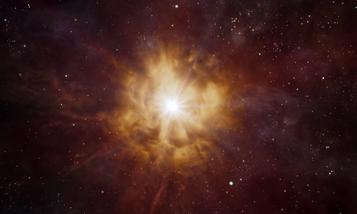
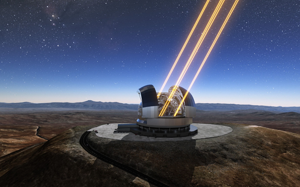

Используя массив радиотелескопов ALMA, астрономы обнаружили фтор в далекой галактике со вспышкой звездообразования, свет от которой путешествовал к Земле более 12 миллиардов лет. Полученные данные проливают свет на механизм образования этого элемента во Вселенной. Результаты наблюдений и выводы ученых представлены в журнале Nature Astronomy. «Как и большинство окружающих нас элементов, фтор образуется в звездах, но до сих пор мы не знали точно, как именно это происходит. Более того, мы даже не знали звезды какого типа производят большую часть фтора во Вселенной!» – рассказывает Максимильен Франко, ведущий автор исследования из Хертфордширского университета (Великобритания).

Фтор обнаружен в составе водородного флюорида в больших облаках газа в удаленной галактике NGP-190387, которую мы видим такой, какой она была спустя всего 1,4 миллиарда лет после Большого Взрыва. Выводы астрономов предполагают, что наиболее вероятные очаги образования фтора в NGP-190387 – звезды Вольфа–Райе. Это очень массивные светила, жизнь которых продолжается всего несколько миллионов лет, одно мгновение в масштабе истории Вселенной. Только так, по мнение авторов исследования, можно объяснить найденные ими количества водородного флоюрида.
Звезды Вольфа–Райе раньше уже рассматривались в качестве возможных источников космического фтора, но до сих пор астрономы не знали, какую важную роль они играют в производстве этого элемента в ранней Вселенной. «Этой галактике потребовалось всего несколько десятков или сотен миллионов лет, чтобы достичь уровня содержания фтора, сравнимого с тем, которое сегодня наблюдается в звездах Млечного Пути, чей возраст составляет 13,5 миллиарда лет. Эти измерения оказались совершенно неожиданными и из них вытекают абсолютно новые ограничения на процессы образования фтора, изучаемые уже два десятилетия», – пояснил Чияки Кобаяши, соавтор исследования из Хертфордширского университета. Открытие фтора в NGP–190387 – один из первых случаев регистрации фтора за пределами Млечного Пути и соседних с ним галактик. Ранее астрономы находили этот элемент в удаленных квазарах, но никогда еще фтор не наблюдался в галактике с активным звездообразованием на такой ранней стадии истории Вселенной.
Дальнейшие исследования NGP–190387 с будущим Чрезвычайно Большим телескопом (ELT) Европейской южной обсерватории (ESO), который увидит первый свет в конце текущего десятилетия, может помочь раскрыть секреты этой галактики. «Массив ALMA чувствителен к излучению, испускаемому холодным межзвездным газом и пылью, а с Чрезвычайно Большим телескопом мы сможем наблюдать оптическое излучение звезд в NGP–190387, что даст важнейшую информацию о звездном составе этой галактики», – заключили авторы исследования.